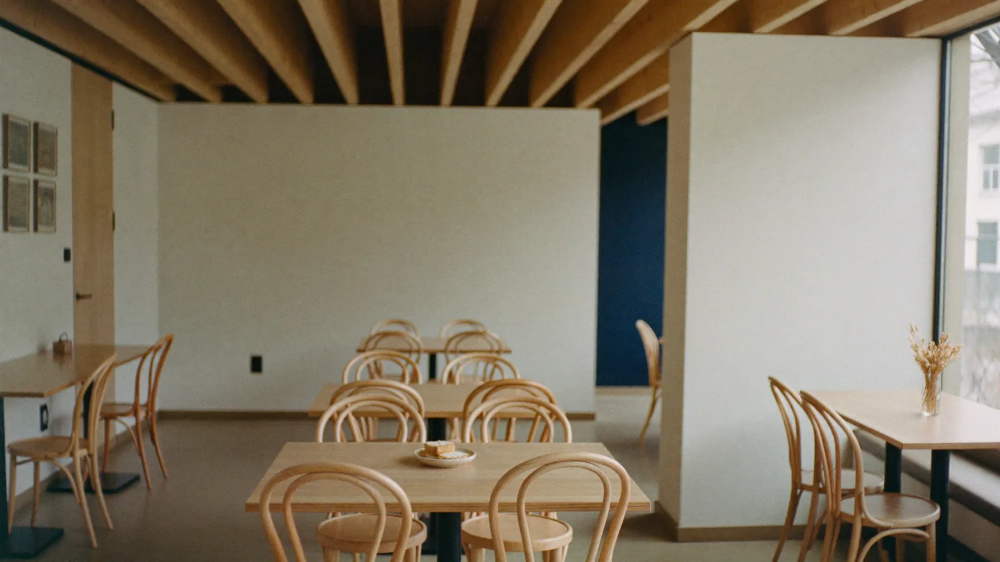
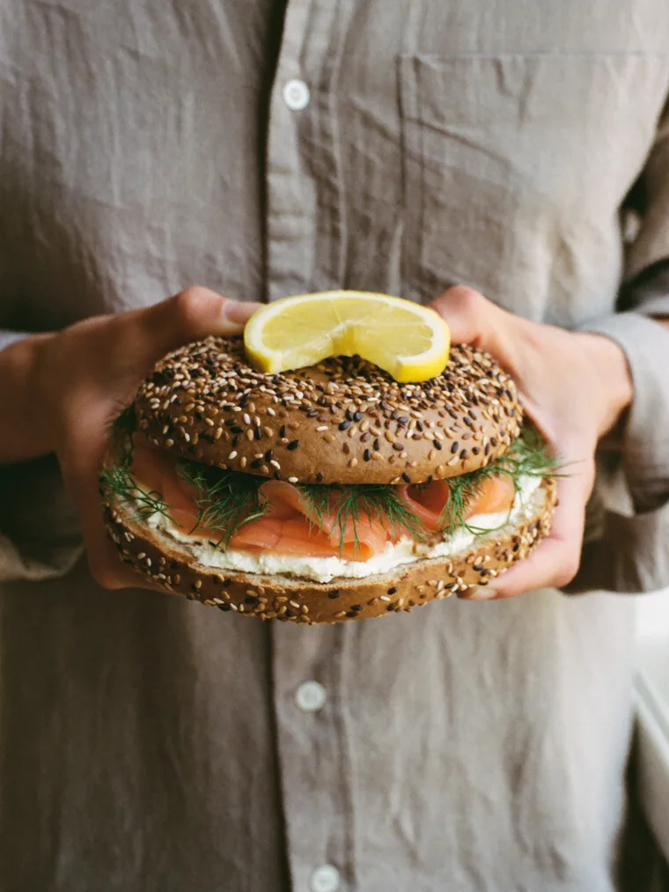
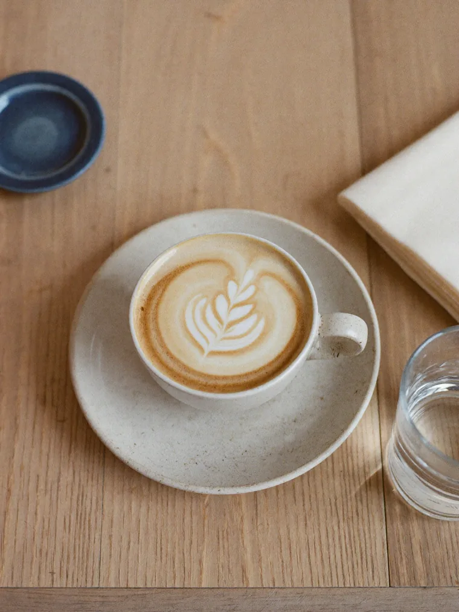
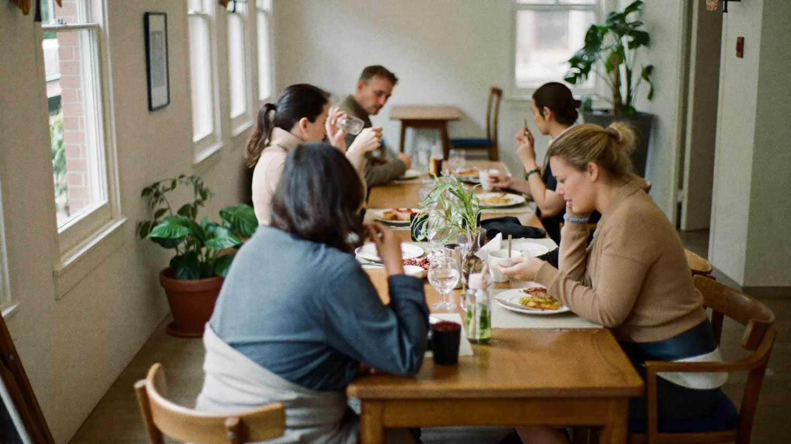

The Local is three towns deep and 2,386 people follow along. There is still no website, no loyalty programme, and no way to know who keeps coming back. This is who we are, what we do, and what we would do about that.
People already follow The Local, across Pretoria, Plettenberg Bay and George. That audience was built on good coffee and a good room, with no website, no mailing list and no loyalty card behind it. The opportunity is simply to give them somewhere to go.
In May 2026, Yoco acquired Dyner.ai, an AI-native operating system for restaurants. Platō Coffee is named in the coverage as one of Dyner's early customers, already a Yoco merchant.1 That stack handles inventory, supplier workflows, reporting and margin, and it handles them well.
Every one of those things happens behind the counter. None of them reach the person sitting at the table. That is not a criticism of the tools, it is simply the half of the business nobody has built yet.
Search for The Local and you get an Instagram grid, a maps pin and other people's photographs. No menu you control, no story, nothing that ranks, nothing you own.
A regular in Pretoria and a regular in George are the same brand to you and two strangers to your systems. Nothing carries a customer from one room to the next.
A point of sale records what left the kitchen. It does not tell you who came back on Thursday, who brought three friends, or who you have quietly lost.
Three towns, one account, and every post made by hand. Adding a fourth room today means adding more manual work, not less.
Constellation is a small South African product and design studio. We build websites, web apps, client portals, payment and transaction flows, the systems that hold a group of sites together, and increasingly the AI that runs inside all of it. Loyalty is one thing we build. It is not the business.
I am in The Local often enough that this started as a customer noticing something missing, not as an agency working a list. The coffee is handled. The room is handled. The part where someone finds you, remembers you and comes back on purpose is not.
So if a rewards card is not what you want, say so. There is plenty here that has nothing to do with stamps.
The front door, built to be owned and edited by you. Fast, searchable, and designed rather than templated. This is the bulk of what we do.
Logged-in areas for staff, franchisees or clients. Roles and permissions, reporting, document handling, audit trails. The unglamorous half that makes a system usable.
One brand, many rooms. Each location edits its own hours, menu and news while the brand stays consistent, and adding the next site costs close to nothing.
Checkout, online ordering, deposits and gift cards, wired into providers properly. We also work with payment partners, including NGRPay, so the rate you are paying per transaction is a conversation rather than a default.
Not a chatbot bolted on. Automation that drafts your content, generates on-brand photography and campaign sets, answers the questions your team keeps retyping, and pulls reporting together without anyone exporting a spreadsheet.
The other half of the work: getting people to actually use these tools well, safely, and without waiting for us. Six weeks, one real task each, a policy they wrote themselves.
The people who would work on this have built hospitality products used across South Africa and abroad, our own software that runs in production, and AI programmes inside global brands. Specifically:
A cloud restaurant operating system: point of sale, inventory, kitchen management, online ordering and self-service kiosks. Founded 2019 and built for the African market. Famous Brands, the group behind Mugg & Bean, Steers and Wimpy, holds a 45.5% stake in Munch Software.2
A reservations and discovery product with an AI chat front end, real-time availability, and a loyalty status that grows with a diner's booking history. Live in venues including Chotto Matte, Kricket and Seed Library.3
A live check-in and connection layer for coffee shops, coworking spaces and events. Guests scan a QR code at the table and see who else is in the room. Seventeen tables, sixty security policies, real accounts, running today at nodapp.space.
A live subscription product we built and run: accounts, billing, an admin portal, file handling and reporting. Proof we ship software and then operate it, rather than designing it and handing it over.
Websites and booking-adjacent systems for groups running several venues at once, where each site needed its own hours, menus and news without the brand drifting. The same shape as three towns under one name.
I consult at Incubeta, where I created and hold the Head of Global Creative and Solutions Architect role. That work is enterprise creative technology and automation, plus AI adoption strategy for global brands including Adidas: where AI genuinely helps, where it must not be used, what the policy has to say, and how a team keeps the habit after the training stops.
Drag the cards, or use the arrows. Nothing here is a bundle you have to buy whole, and nothing depends on you wanting a rewards card.
The loyalty layer
We pulled the navy and cream straight out of your own logo and feed, then built a working sketch you can press rather than a slide describing one. Tap the tabs, and tap the stamp. A loyalty card is the easiest thing to demonstrate in one screen, which is the only reason it is the example here.

Open from six. Three neighbourhoods, one room that feels like yours.

Bagels
CoffeeEvery cup counts, in Pretoria, Plett or George. One card, all three rooms.
Bagels, brunch and Platō coffee
Bagels, brunch and Platō coffee
Bagels, brunch and Platō coffee
Hours, menus and each room's own news, edited by whoever runs that room, not by an agency.
Navy #181E36 and cream #DED8D2, sampled directly from your logo. The warm gold comes out of your own photography. Every text pairing here clears WCAG AA contrast.
Tap the stamp button. That is the whole point of a group loyalty system: a customer earns in Plett and redeems in Pretoria, and you finally see it happen.
Each location gets its own hours, menu and news, edited by the person who runs it. The brand stays consistent without becoming somebody's full-time job.
That is deliberate. We would rather show you something you can press than a slide describing it.
Nod is our own product, live today. A guest scans a QR code on the table, says who they are in one line, and sees who else is in the room right now. It was built for coffee shops, coworking and events, which is to say it was built for exactly what The Local already is on a weekday morning.

A code on the table, opened in the browser, so there is nothing for a guest to install.
Who is here, what they do, whether they are open to a conversation. Capped by design, so the room stays a room.
Who your room actually serves, when, and how often. The thing your point of sale cannot tell you.
Worth saying plainly: Platō is already the venue on Nod's own front page, as the live preview. We set that up because we drink your coffee and wanted to see the shape of it. Nothing is switched on, nobody has been contacted, and no guest data exists. It is yours the day you want it, and it stays off until then.
Grouping The Local into Nod means the loyalty card, the check-in and the guest picture are one system rather than three. It also means you are not paying us to build a community layer from scratch, because it already exists.
Not part of a website build, and not something we would bundle in. Mentioned because it is the work we do at Incubeta and it tends to matter to groups your size sooner than they expect.
I run a six-week programme called ARIA: Audit, Readiness, Integration, Adoption. Each week produces something real rather than a reading list. Where AI genuinely helps, where it must not be used, what your data policy needs to say, and how a small team keeps the habit after the training stops.
Generating on-brand photography, menus, social sets and campaign assets from your actual brand rather than stock. The images in the demo above were produced this way, in your palette, in minutes. At three rooms and growing, this is the difference between marketing being someone's evening job and it being a system.
POPIA applies the moment you hold a customer list. We build loyalty and guest data with consent, retention and access designed in from the first migration, not retrofitted after somebody asks.
No pricing in this document on purpose. We would rather understand what you actually want before putting numbers on it.
Half an hour, in one of your rooms. You tell us what is annoying you, we listen.
We come back with a scoped proposal: what we would build, in what order, and what it costs.
If it is a fit, we start with the front door and switch the loyalty card on from there.